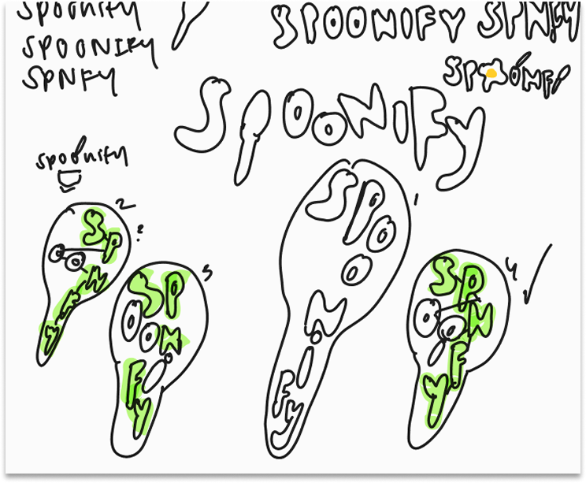
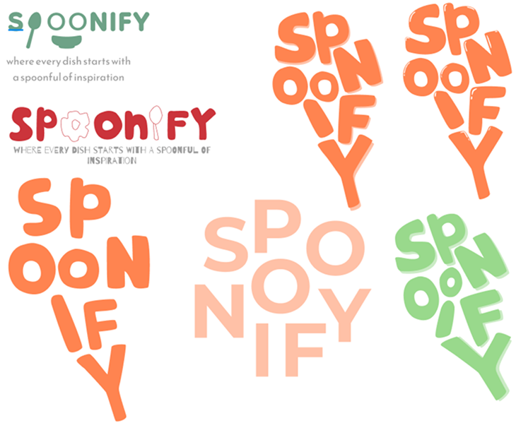

Team
Livianne Product Designer
Timeline
August 2024 - December 2024
Problem Statement
As a home cooking enthusiast, I often run into the challenge of finding the perfect recipe. I find myself switching between multiple platforms like TikTok and Google to match recipes with my mood and cravings. While these efforts are well intentioned, they end up being time consuming and time that could be better spent actually cooking. After talking with friends and family, I realized this frustration is a shared experience for many home cooks.
Research & Pain Points
To understand the gap with current recipe apps, I conducted a competitive analysis of popular cooking apps and interviewed users ranging from aspiring home cooks to professional chefs. This research revealed that while existing platforms offer utility, they often fail to address the lack of motivation and personalization that prevents people from cooking more often
Key Insights & User Struggles
Through my research, I identified three core frustrations that Spoonify aims to solve:
- Decision Fatigue: Users reported that finding a recipe "takes forever" and that they often scroll through endless lists on Google only to give up without cooking.
- The "Motivation" Gap: Many individuals feel that cooking requires too much time and energy, leading to a complete lack of motivation to start.
- Inflexible Personalization: A lack of filters makes it difficult for users to narrow down recipes by specific skill levels, dietary restrictions, or ingredients they already have.
The Competitive Analysis
My analysis of apps like Umami, Paprika 3, Pepper, and Mela showed a clear opportunity for Spoonify to stand out:
- Umami/Paprika: Strong utility and recipe management Lacks social interaction and community engagement.
- Pepper: Intuitive UI and social focus Discovery process can feel cluttered without strong filters.
- Mela: Simple, elegant interface Does not provide detailed nutritional information or calorie counts.
Design Features
Using everything I learned from my research, I narrowed Spoonify down to three key features.
- Cooking Mode: Instead of constantly scrolling, rewinding, or losing your place, Cooking Mode provides a clear, step-by-step guide that helps users easily navigate the cooking process from start to finish.
- Streamlining Recipe Searching: Considered as one of the most time-consuming parts of cooking, this feature simplifies discovery by tailoring recipes to each user’s preferences. Through personalization, curated playlists, and shared collections from other users, the app makes finding the right recipe quick and intuitive.
- Fostering a Community: Unsure what to cook? Users can see what their friends are enjoying, track cooking streaks to stay motivated, and interact through comments, sharing feedback, tips, or even praising a “secret” ingredient someone added. This feature turns cooking into a shared and engaging experience rather than a solo task.
Streamlining Recipe Searching
Lessons Learned
Conducting competitive analyses played a key role in creating and ideating for Spoonify. This process allowed me address the gaps and user expectations for. It also helped me to understand the importance of aligning innovation with user needs, helping me distinguish the factors that elevate an app from being good to great.
Small details make a big impact and it is the features like "Liked Recipes," easy sharing options, or clear nutritional information that make the app more practical and appealing. These thoughtful additions help ensure that the app is inclusive and appealing to everyone.
Passion to Prototype
All in all, I truly enjoyed creating this app from its start to finish. My love for cooking and hosting inspired this project, letting me explore a form of creativity rooted in creating experiences for others, not just designing interfaces.
For the Curious
I created the logo myself! I knew I wanted to include a spoon in the design and ended up fitting two into the design... see if you can spot them!

